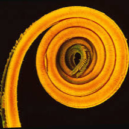
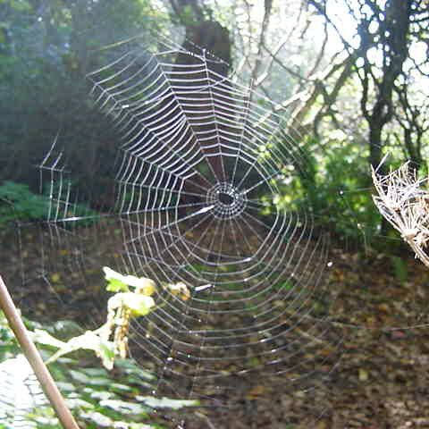
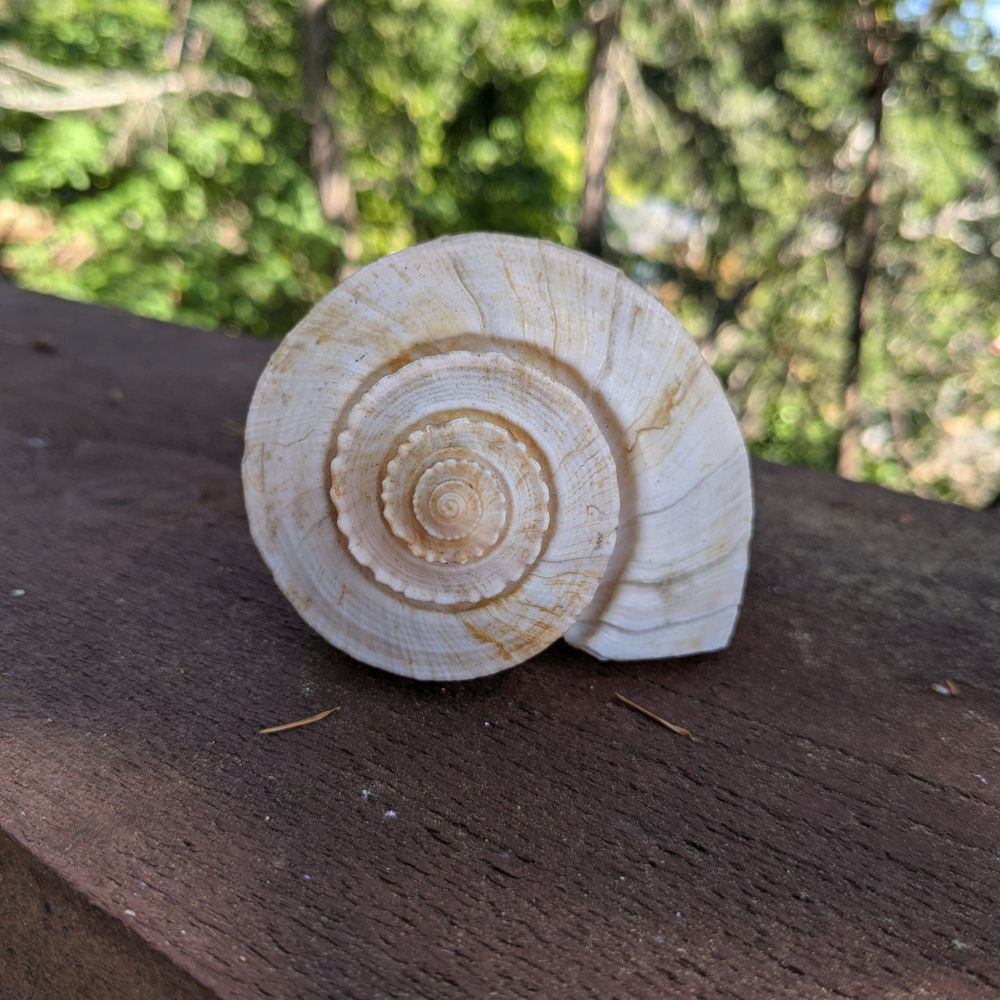
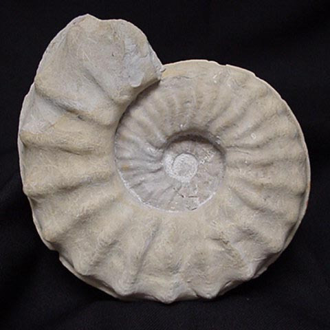
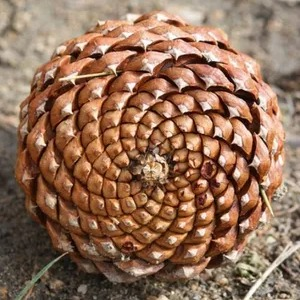
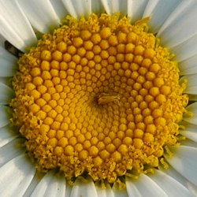
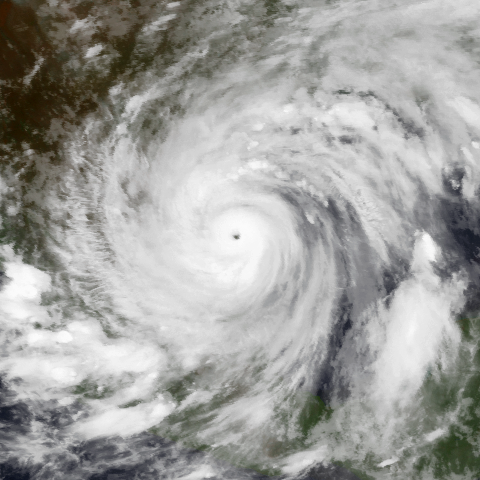
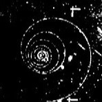
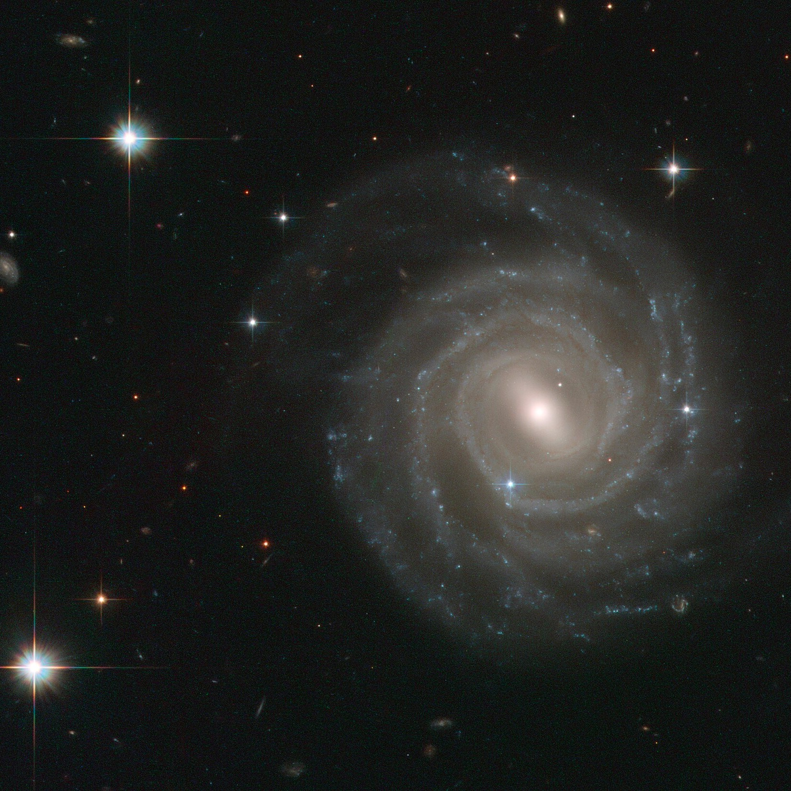

From the shells to galaxies — nature's dynamic curve
The spiral is known as one of the most recognizable, beautiful, and captivating curves in mathematics. It is also one of the most ubiquitous in nature, occurring in vast number of different contexts and scales. We see spirals in common situations such in the spiral shells of snails and of other gastropods in the sea, in fiddle heads of growing ferns, in the pattern of yellow florets in a daisy, in the sturdy curve of a rams horn and in the fragile web of an orb spider, among many others. At larger scales, the spiral shape emerges in whirlpools, tornados and hurricanes and at vastly larger scales spirals in certain galaxies, like the Milky way, with spiraling arms that span hundreds of thousands of light year. Microscopic spirals can be observe in the coil of a moth tongue, in the spiral forms in growing slime model, and even in the decaying orbit of an electron in a magnetic field.
One of the reasons spirals capture our attention is that the shape has an inherently dynamic character, drawing our eyes progressively inwards and outwards -- as if to find where the curve starts or ends. Indeed most spirals in nature are built out of dynamical processes. However, the character of these processes vary considerably. In cases where the spirals themselves appear static, such a with a spiral seashell or a fiddle head fern, we understand that they have formed through a different process of growth over a longer period than our eye can catch. In other cases such as in a whirlpool or twister, the dynamics is self evident, as we can see the spiral form as objects move about a center. Other spirals emerge almost accidentally as a particles and object arrange themselves to fill space in the most efficient way, such as in the spirals of a sunflower or daisy. At the galactic scale, the spiral arms are thought to form as a result of a cosmic traffic jam of stars circling around their collective center. This chapter will deal with mathematical ways to describe the various kinds of spirals that from in nature, but first let's consider some of the physical processes that create them.
One way that a spiral can arise naturally is when a long thin flexible object like a rope or wire is coiled around and around itself. Nature provides numerous examples. Fig. 9.1A shows a young fiddle head fern emerging in spring, ready to unfurl to become a fern frond. This spiral is nature's way of growing the frond in advance, protecting in a curled up state until it is warm enough for the full frond to spring in fulfillment of its function. Fig. 9.1B shows the proboscis of a moth, the long straw like organ for sipping nectar. It is curled up out of the way but ready to be extended to reach into small narrow funnels of some types of flower, to reach the food that the moth relies on. Fig. 9.1C shows the spiral web of an orb-weaver spider. The web has has stronger non-sticky radial threads to anchor the web in place and form a scaffold for the rest of the web. The spiral is formed as the spider places the finer sticky thread on the scaffold, going around and around in a spiral, using its leg span as a ruler to get even spacing for each turn. These three examples of coiled spirals emerge through different processes but they have a common property -- the radius of the spiral grow at an approximately constant rate for each turn. The resulting mathematical description -- is called an Archimedean spiral, which we will learn about in Section 2.

B Moth proboscis curled up safely ready for use
C Spider orb web, the sticky spiral ready to catch preyAnother common form of spiral in nature can occur when organisms progressively build a form or structure by adding new material incrementally over time on one side or surface of the preceding structure. If the material that is added preserves the overall shape of the structure a special spiral form can arise, called the logarithmic spiral. We see this type of growth in a variety of sea shells, such as the whelk shell in Fig. 9.2A. Whelks are carnivores, known for grazing along the bottom of the ocean, eating other shellfish -- including clams, mussels, and other sea snails. When they die, their strong thick shells remain on the ocean floor and are sometimes repurposed as homes for other creatures, like the hermit crab. Whelks also produce a fascinating egg casing, that can sometimes be found on the beach, coiled up helical structure, like a telephone cord or DNA.

A Whelk Shell
B Ammonite FossilSpiral sea shells have been around for a very long time, and thanks to their resilience they are abundant in the fossil records Some ammonite shells, such as in Fig. 9.2B, date back over 400 million years. Intrepid fossil hunters around the world can find them where sedimentary rock is exposed to weather forces, such as sea cliffs, beaches, and canyons. We saw some examples of such growth in the chapter on gnomons.
On land, this type of spiral can also be seen in the growing of horns of certain mammals, such as the majestic horns of the Rocky Mountain Bighorn sheep, as seen in Fig. 9.2C. These horns are created when keratin is added to the base of the previous years growth, with an amount that is proportional to what was added the year before. Fully grown males can grow massive horns that spiral around more than 360 degrees, creating a display that can attract mates. If needed they are used to best other males in head to head battles. Seen from the side, these horns are shaped like logarithmic spirals we study in Section 2. The horns other sheep, goats, and antelopes spiral in rich variety of ways, and are best described in 3-dimensions. We will touch on this subject in Section 3.
In the chapter on gnomons, we constructed some 2-dimensional spiral forms using using rectangular and triangular gnomons and connecting their corners with circular arcs. These curves are approximations to logarithmic spirals. In Section 2, below, we will see a more exact and general way to mathematically describe such spirals in the coordinate plane. This mathematical description will allow us to discover some remarkable properties of logarithmic spirals.
Some spirals emerge as a result of nature solving a space filling or packing problem. We see this in various kinds plants that produce multiple seeds, scales or florets. When these structures are formed from new cells, known as primordia, that emerge from a central point and spread out radially to fill space, special spirals known as parastichies, become visible as the eye connects nearest neighbors. These spirals are not formed by the plant adding seeds step by step along the spiral that is visible, instead, the spiral parastichies are emergent. They are the result of each new primordia being placed along a generating spiral at a fixed angle with respect to the previous cell in a process called phyllotaxis. We will learn more about this fascinating process and some of the rich mathematics that it spires in the next chapter. For now, it is enough to say that this generating spiral is neither Archimedean (constant growth in radius) or logarithmic (exponential growth in radius). The rate of growth of its radius diminishes overtime, over time in a particular way, forming what is called Fermat's spiral. Fermat's spiral has the property that equal angular sectors contain equal areas — making it ideal for uniform packing of seeds.

A Pine cone scales
B daisy floretsThis last category of spirals in nature are different in character than the previous, all of which are the result of objects or structures that are laid down in particular static pattern. Spirals can also result in dynamical processes where objects physically move through space. Sometimes the objects themselves follow spiral paths or trajectories, and in other cases the spiral patterns we see are the result of the clustering of objects as they move and interact with each other. Examples of the former are hurricanes, as seen in Fig. 9.4A, where warm moist air is drawn inwards towards a center or eye of the storm on a spiral path as it rises, and then spirals out again as rises and cools. This is complex dynamical process, but one of the drivers of these spiral forms is what is known as the Coriolis effect, which a twisting force the result of motion of air on a rotating planet -- in this case the earth. At the subatomic scale, a nice example of a spiral path is the orbit of an electron in a magnetic field, as seen in Fig. 9.4B. A charged object should move in a circular orbit in a uniform magnetic field if it loses no energy. However, when they lose energy, as they inevitably do either through interacting with the material in which they move or through radiation, their orbit decays in a spiral. We can describe the nature of these spiral forms mathematically if we understand the forces at play. In certain models the spiral path is logarithmic, but in practice the dynamics are much more complex and this simple model fails to capture the full detail.

A Spirals of hot moist air moving around the eye of 2010 hurricane Alex in the Gulf of Mexico
B The decaying orbit of an electron subject to a magnetic field in a cloud chamber
C Spiral arms composed of stars and dust moving around the center of galaxy UGC 12158The spirals seen in some types of galaxy, as seen in Fig. 9.4C, come about in a different way. The hundreds of millions of stars and the dust clouds that make up galaxies do not move in spiral paths, they move in elliptical orbits around their collective gravitational center. The orbital speeds decrease with distance from the center. As the stars move around the center they periodically catch up to other stars on other orbits, and slow down or speed up a little as a result. This process creates "traffic jam" type patterns called density waves, that can manifest as spiral arms if the conditions are right. We will explore different kinds of density waves that lead to spiral patterns in Section 2.
As we have seen, the natural world offers us a variety of different types of spiral patterns, some shaped by growth and some of which emerge from collective motion. This section develops the mathematical language needed describe these curves more precisely and to understand the mechanisms that produce them.
So when is a curve spiral? Put simply, a spiral is a curve that winds around a central point while moving steadily farther away from it (or closer to it, depending on the direction the curve is traced.) The key quantity is the distance of the curve from the center, called the radius $r$ and how this quantity changes as the angle $\theta$ the point makes with the origin and the axis changes. Different relationships between $r$ and $\theta$ give fundamentally different spiral shapes.
It is useful to think of the angle $\theta$ as accumulating continuously — not just through one rotation from $0$ to $360^{\circ}$, but through $2$ rotations, or $720^\circ$, and more. With this convention, the three major families of spiral each express a distinct mathematical rule for how the radius grows with the angle.
Perhaps the most intuitive spiral is one Archimedes described around 225 BCE. Its defining property is simple. Archimedes' spiral is the spiral whose radius grows at a constant rate as the angle increases. As a consequence the turns of the spiral are are evenly spaced — like the coils of a rope or the grooves on a vinyl record. Suppose the radius starts out a $r=a$, and for each complete revolution $n$ the radius increases by the same fixed amount $b$. Then the formula for the radius is:
Here $a$ sets the starting radius and $b$ is the gap between successive turns. This relationship may look familiar since it describes an arithmetic sequence for the radius at each full turn. For that reason this spiral is sometimes also called an arithmetic spiral. Now a curve is not simply a sequence of discrete points defined at each full revolution. It is a continuous collection of points for all angles between each rotation and beyond. We can adjust the above formula to account for all angles by replacing the number of full revolutions $n$, with the fraction of a full revolution expressed in terms of the angle $\theta$, namely $n=\frac{\theta}{360^\circ}$. Then, for example, when $\theta=90^\circ$, we have $n=\frac{1}{4}$, or a quarter of a full revolution. The revised formula for Archimedes' spiral in terms of the angle $\theta$ is: $$r=a+\frac{b}{360}\theta$$
The second family of spirals arises when the radius does not increase by a fixed amount per revolution, but increases by a fixed factor. This is called the logarithmic spiral each new increment of angle brings a radius increase proportional to the current radius. If the radius starts at radius and grows by a constant factor each full revolution , then the formula for the radius is:
The radius $r$ after each complete revolution $n$ follows a geometric sequence, with initial radius $a$ and growth factor $b$. Knowing that radius varies continuously with angle, $\theta$, we replace $n$ with $n=\frac{\theta}{360^\circ}$ , as in the above, and get a new formula for $r$ in terms of $\theta$: $$r=a\cdot b^\frac{\theta}{360}$$ The factor $b$ controls how steeply the spiral expands. If $b$ is close to $1$ the spiral is tightly-coiled whose turns are barely distinguishable near the center. If $b$ is much larger than $1$ the spiral expands rapidly with each revolution. If $b$ is less than 1, the radius decreases and the curve spirals inwards as $\theta$ grows.
The logarithmic spiral has a remarkable property of self-similarity Taking a snapshot of a small section and enlarging it gives a picture indistinguishable from the whole.
The third family, named for Pierre de Fermat who studied it in the 1630s, grows more slowly than either of the preceding types: the radius is proportional to the square root of the angle.
This deceptively simple rule has an important geometric consequence: the area between any two successive turns of the spiral is constant, regardless of which turns you measure. Stated differently, equal angular sectors of the spiral contain equal areas. This is precisely the property needed to pack objects uniformly across a disk — which is why the arrangement of seeds on a sunflower face approximately follows Fermat's spiral.
Spirals come in two possible orientations: a right-handed spiral that coils counterclockwise as it expands, and a left-handed spiral that coils clockwise (Fig. 9.5). Mathematically, replacing $\theta$ with $-\theta$ reflects the spiral in the horizontal axis, converting one handedness into the other. This mirror property is called chirality (from the Greek cheir, hand). Most gastropod shells are right-handed (dextral), meaning the opening faces to the right when the apex points upward. Left-handed shells, sinistral, of normally right-handed species are rare and are sought-after by collectors. The ram's two horns are a perfect chiral pair — one dextral, one sinistral — produced by bilateral symmetry acting on a single underlying growth law.
Three polar equations generate the three principal families of natural spiral, distinguished by how the radius grows with angle $\theta$ (measured in degrees, with each full revolution adding $360°$):
Archimedean Spiral (equal spacing every turn):
Logarithmic Spiral (radius Grows by common factor every turn):
Fermat's (Equal sector areas every turn):
Here $a$ sets the starting size, $b$ is related to growth. For the Archimedean spiral it is the amount added to added per full revolution, and for the Logarithmic spiral $b$ is the ratio by which the radius multiplies each revolution (Logarithmic). Replacing $\theta$ with $-\theta$ in any formula reflects the spiral to produce its chiral mirror image.
Suppose you photograph the cross-section of an unknown shell and measure the radius at several angular positions. You record (in millimetres, with $\theta$ in degrees):
| $\theta$ | $r$ |
|---|---|
| 0 | 3.0 |
| $360^\circ$ | 6.3 |
| $720^\circ$ | 13.2 |
| $1080^\circ$ | 27.6 |
What kind of spiral does this fit best?
Step 1 — Check for Archimedean (linear). If $r$ grows linearly with $\theta$, then consecutive values of $r$ at integer multiples of $360^\circ$ should differ by a constant amount. Here: $6.3 - 3.0 = 3.3$, $13.2 - 6.3 = 6.9$, $27.6 - 13.2 = 14.4$. The differences are growing, not constant. This is not Archimedean.
Step 2 — Check for logarithmic (exponential). If $r$ grows exponentially, consecutive values at equal angle steps should have a constant ratio. Compute: $6.3/3.0 \approx 2.10$, $13.2/6.3 \approx 2.10$, $27.6/13.2 \approx 2.09$. These ratios are very nearly constant. The shell is approximately logarithmic.
Step 3 — Find the parameters. Since $r = a\cdot b^{\frac{\theta}{360}}$, at $\theta = 0$ we get $a = r_0 = 3.0$ mm. Each full revolution adds $360^\circ$ to $\theta$ and multiplies $r$ by $b$. Since the multiplier is $\approx 2.10$, we have $b \approx 2.10$ The shell formula is $r \approx 3.0\cdot (2.1)^{\frac{\theta}{360}}$ mm.
Interpretation. This is a fairly tightly-wound logarithmic spiral — each revolution roughly doubles the radius.
The three explorations below demonstrate how variations of the parameters $a$ and $b$ of each spiral family individually shape change.
Archimedean spiral — $r = a + b \cdot (\theta / 360°)$
Here $a$ is the radius at $\theta = 0$ (where the spiral starts) and $b$ is the amount added to the radius with each full revolution. Equal spacing between turns is the hallmark: no matter how many turns the spiral makes, adjacent turns are always exactly $b$ apart.
Logarithmic spiral — $r = a \cdot b^{\,\theta/360°}$
Here $a$ is the starting radius and $b > 1$ is the growth ratio. After each complete revolution, the radius is multiplied by factor $b$. The spacing between turns widens as the spiral grows, because each new revolution has a proportionally larger radius. This is the spiral of exponential growth. It is also self-similar as we shall see. A zoomed in snapshot of any section looks identical to a snapshot of the whole.
Fermat's spiral — $r = a \cdot (\theta / 360°)^{\,b}$
Here $a$ is the overall scale and $b$ controls how rapidly the radius grows with angle. The standard Fermat's spiral uses $b = 1/2$, giving $r = a\cdot\sqrt{\theta/360°}$ . The the turns become more closely spaced as you move outward, making this ideal for uniform packing. Varying $b$ between $0.25$ and $1$ generates a whole family of "power spirals": at $b = 1$ the formula becomes Archimedean $r = a\cdot\theta/360°$, while smaller $b$ gives increasingly compressed outer turns.
Set the three explorations to comparable parameter values — try $a = 1$, $b = 1$ for Archimedean; $a = 1$, $b = 2$ for Logarithmic; $a = 2$, $b = 0.5$ for Fermat's. In each case the spiral reaches roughly the same outer radius after a few turns. Now observe where the turns are most tightly bunched: the logarithmic spiral is densest near the centre (the turns expand outward); the Fermat spiral is densest near the outer edge (the turns compress outward); the Archimedean spiral has equal spacing throughout. These three patterns correspond directly to three different natural "packing problems" — hence why each spiral type appears in different biological contexts.
The Exploration below draws all three spiral families simultaneously on the same fixed scale, each with its own parameters, so you can make the comparison suggested above in a single picture. Observe how the spacing between successive turns differs: equal for Archimedean, widening for logarithmic (crowded near the center, spread out near the edge), and narrowing for Fermat's (spread near the center, increasingly compressed outward).
All three spirals share one fixed scale: the edge of the plot is r = 10, and the grey circles mark r = 2, 4, 6, 8, 10. Each family has its own $a$ and $b$ sliders, just as in Explorations 9.1–9.3; the Turns slider sets how many revolutions all three draw (any spiral that reaches r = 10 first stops there). Use the checkboxes to isolate each type.
To write the spiral equations of §2.1 we used $r$ , which measures the distance from a center, and $\theta$ , the angle of rotation. This systems of coordinates for describing a curve is called the polar coordinate system, and it is far better suited to circular and spiral geometry than the familiar Cartesian grid of horizontal and vertical distances.
The Cartesian system locates every point by two directions, the horizontal direction ($x$) and the vertical direction ($y$) measured left or right or up and down from a fixed position called the origin. The polar system locates each point by specifying how far it is from the origin ($r$), and in what direction ($\theta$)? Navigators and astronomers have used this approach for centuries. A compass bearing is a polar coordinate. Every point in the plane has a unique polar coordinate $(r, \theta)$ provided we agree that $r \geq 0$ and $0 \leq \theta < 360^\circ$ . In practice we allow $\theta$ to continue beyond $360^\circ$ when tracing spirals.
The two systems describe the same plane, so every point has both a Cartesian address $(x, y)$ and a polar address $(r, \theta)$. Converting between them uses the definitions of sine and cosine for a right triangle with hypotenuse $r$ (Fig. 9.6):
Going the other way, from Cartesian to polar, requires finding the distance from the origin and the angle to the positive $x$-axis:
The radius formula comes courtesy of Pythagoras. The $\arctan$ formula requires care: it gives the correct angle only in the first and fourth quadrants (where $x > 0$). For points with $x < 0$ or $x = 0$, the angle must be adjusted by adding or subtracting $180^\circ$, depending on the sign of $y$. Fig. 9.7 shows why.
A point at polar coordinates $(r, \theta)$ has Cartesian coordinates:
A point at Cartesian coordinates $(x, y)$ has polar coordinates:
Note that the origin $(0, 0)$ has $r = 0$ but $\theta$ can take any value. The origin is the one point with no unique polar address.
To graph a polar equation such as $r = 1 + \theta/360$ we build a table of polar coordinates: choose values of $\theta$, compute $r$, then plot the point at distance $r$ from the origin in direction $\theta$. The table below covers two full revolutions.
| $\theta$ (degrees) | $r = 1 + \theta/360$ | Direction |
|---|---|---|
| 0° | 1.00 | East |
| 90° | 1.25 | North |
| 180° | 1.50 | West |
| 270° | 1.75 | South |
| 360° | 2.00 | East |
| 540° | 2.50 | West |
| 720° | 3.00 | East |
Plotting these seven points and connecting them smoothly (with intermediate points if needed) produces an Archimedean spiral of two turns. The gap between the first and second revolution is always 1 unit — the defining property of equal turn spacing. Fig. 9.8 shows the table graphed both ways.
The polar coordinate system is generative beyond spirals. Many elegant and biologically resonant curves admit simple polar equations that would be impossible or unwieldy in Cartesian form.
Rose curves $r = a\cos(n\theta)$ produce $n$ petals when $n$ is odd and $2n$ petals when $n$ is even, as $\theta$ runs from $0$ to $360^\circ$. The three-petal rose ($n = 3$) appears in the cross-section of certain sea urchin tests; rose-like patterns arise in many flower genera whose petals unfurl in discrete rotational steps.
The cardioid $r = a(1 + \cos\theta)$ is heart-shaped. It appears in the directional sensitivity pattern (polar plot) of certain microphones, in the reflection caustic of a coffee cup in sunlight, and as a cross-section through the stem-base of an apple. Its name, from the Greek for heart, is apt.
The limaçon $r = a + b\cos\theta$ generalises the cardioid (which is the case $a = b$). Depending on the ratio $a/b$, it can have a dimple, an inner loop, or no indentation. Pascal's limaçon arises naturally in the analysis of circular motion as seen from a moving platform. Fig. 9.9 shows examples of all three families.
The Polar Grapher below lets you plot all of these curves and both spiral families, adjusting parameters interactively. Observe how dramatically different curves emerge from the same underlying coordinate system.
Select a curve family and adjust the parameters $a$ and $b$. Try $b = 2, 3, 4$ on the Rose curve to see how petal count changes.
A nautilus chamber boundary follows $r = 3\cdot(3.1)^{\theta/360}$ (with $r$ in centimetres and $\theta$ in degrees), meaning the radius triples with each full revolution. Find the Cartesian coordinates of the point at $\theta = 90°$ (one quarter revolution).
Step 1 — Compute $r$. At $\theta = 90°$: $r = 3\cdot(3.1)^{90/360} = 3\cdot(3.1)^{0.25}$. Now $3.1^{0.25} \approx 1.327$. So $r \approx 3 \times 1.327 \approx 3.98$ cm.
Step 2 — Apply the conversion. At $\theta = 90°$, the ray points straight North (positive $y$-axis), so $\cos 90° = 0$ and $\sin 90° = 1$. Therefore: $x = r\cos\theta = 3.98 \times 0 = 0$ cm and $y = r\sin\theta = 3.98 \times 1 = 3.98$ cm.
Result. The point lies at $(0, 3.98)$ — directly above the origin at 3.98 cm.
Check. $r = \sqrt{x^2 + y^2} = \sqrt{0 + 3.98^2} = 3.98$ ✓ and the angle to the positive $x$-axis is $\arctan(3.98/0) = 90°$ ✓.
The spirals we have met so far are traced by a single moving point following a fixed rule. But nature also produces spirals as emergent patterns — visible shapes that arise from many simple objects each following the same rule, without any single one of them "knowing" it is part of a spiral. Here is a purely geometric way to see this.
Start with a square. Inside it, draw a second, smaller square whose four corners each lie on one side of the first. Now repeat: inside the second square, draw a third whose corners lie on its sides — with the vertices touching in the same relative position. And again, and again.
The resulting picture looks like a pin-wheel of shrinking squares. But look more carefully at the corners: the top-right corner of the outer square, then the top-right corner of the next square, and the next — these points are not arranged randomly. They trace a spiral.
The construction has a single free parameter, the rotation angle $\alpha$, which describes how many degrees each inner square is turned relative to the square that contains it. Once $\alpha$ is chosen, the size of the inner square is fixed by the the requirement that is corners must lie exactly on the sides of the outer square) and requires no further choice.
Here is the geometry. We measure each square by its circumradius, the distance from the centre $O$ to a corner. The outer square has circumradius $R$, and its corners point at 45°, 135°, 225°, and 315° from horizontal. The inner square, rotated by $\alpha$ and shrunk by a scale factor $\lambda$ (the Greek letter lambda), has circumradius $\lambda R$, and its corners point at $45°+\alpha$, $135°+\alpha$, $225°+\alpha$, and $315°+\alpha$. The corner $C$ at angle $45°+\alpha$ must lie on the top side of the outer square. The right triangle formed by the centre $O$, the corner $C$, and the midpoint $M$ of that side (Fig. 9.10) fixes the scale factor in four steps.
Height of the outer side. The outer square's corner $Q$, at angle $45°$, is a distance $R$ from the centre, so its height above the centre, OM, is $$\text{OM}=R\sin 45° = \frac{R}{\sqrt{2}}$$Height of the inner corner. The corner $C$ is a distance $OC = \lambda R\; .$ It is at angle $45° + \alpha$, so its height above the centre is $\lambda R\sin(45° + \alpha)$.
The touching condition. $C$ lies on the top side exactly when the two heights are equal:
Solve for $\lambda$. Dividing both sides by $R\sin(45°+\alpha)$ gives the scale factor. The size $R$ of the outer square cancels, so $\lambda$ depends only on the angle:
Check. With $\alpha = 15°$, $\lambda = 1/(\sqrt{2}\sin 60°) = 1/(1.414 \times 0.866) \approx 0.816$. This is the value Exploration 9.6 shows at its starting setting.
There are a few things to observe:
Each step scales the distance from the centre by $\lambda$ and rotates by $\alpha$. After $n$ steps, the corner that started at distance $r_0$ and angle $\theta_0$ is at:
Eliminating $n$ gives $r = r_0 \cdot b^{\,\theta/360°}$ where $b = \lambda^{360°/\alpha}$ — this is exactly the logarithmic spiral. The spiral is not drawn by any single square; it is the pattern formed by the succession of corners.
If every step of a construction scales distances from a centre by a fixed factor $\lambda$ and rotates by a fixed angle $\alpha$, the points produced after successive steps trace a logarithmic spiral:
where $b = \lambda^{\,360°/\alpha}$ is the growth ratio per full revolution. For nested squares with rotation $\alpha$, the touching constraint requires $\lambda = 1/(\sqrt{2}\sin(45°+\alpha))$.
Each inner square is rotated by $\alpha = 20°$ from the one outside it. The outer square has circumradius $R_0 = 10$ cm (centre to corner). Find the scale factor, and describe the spiral traced by the corners. How many squares are need until the squares are less than 0.1 cm in size, and so not visible? What is the total angular rotation? What is the growth ratio per full rotation?
Step 1 — Scale factor. $\lambda = \dfrac{1}{\sqrt{2}\,\sin(45°+20°)} = \dfrac{1}{\sqrt{2}\,\sin 65°} = \dfrac{1}{\sqrt{2}\times 0.906} \approx \dfrac{1}{1.281} \approx 0.781$. Each step reduces the circumradius to 78.1% of the previous.
Step 2 — How many squares? After $n$ steps: $R_n = 10\times 0.781^n$. Setting $R_n = 0.1$ cm we get: $$0.781^n = 0.01 \Rightarrow n = \log(0.01)/\log(0.781) \approx 18.8$$About 19 squares are visible.
Step 3 — Total rotation. 18 steps at 20° each = 360° — exactly one full revolution of the spiral before it vanishes.
Step 4 — Growth ratio per revolution. $b = \lambda^{360°/\alpha} = 0.781^{18} \approx 0.012$. Working outward: the radius multiplies by $1/0.012 \approx 83$ for each full revolution — a very rapidly expanding spiral.
The same construction works for any regular polygon: inscribe a rotated equilateral triangle inside a larger one, or a hexagon inside a hexagon. Each polygon family produces its own $\lambda$ and $\alpha$, and therefore its own logarithmic spiral. The shape of the spiral — how tightly it winds — depends only on $\alpha$ (or equivalently on $b$). The square version is the simplest to analyse because its geometry is the most transparent.
The scale-and-rotate picture also sheds light on spiral galaxies. Stars orbit on elliptical paths at different average distances from the galactic centre. They orbit at different speeds; the inner stars orbit faster. Over time the inner stars catch up to an pass starts in nearby outer orbits pull. As they do, they interact with stars on neighbouring orbits pulling on them. The result is that the axis of the elliptical orbits are dragged. The ellipses of different sizes experience different rotation angle, producing a similar cumulative effect as the nested squares that are rotated by different amounts: the "spoke" of stars gradually winds into a spiral arm. Individual stars do not follow a spiral, they follow an ellipes; the spiral is the emergent pattern of their collective positions.
We can make this picture concrete with nested ellipses, as in Fig. 9.11. Let's start with an ellipse whose width (its minor axis) is a fraction $w$ of its length (its major axis). Turn a copy through a small angle $\alpha$ and shrink it by a factor $\lambda$, just enough that it fits inside the original. It then touches the outer ellipse at two points, a little way round from the ends of its major axis, and runs very close to it on either side of those points. Then do the same to the new ellipse, and again, and again.
Every step scales by the same $\lambda$ and turns by the same $\alpha$, so Key Result 9.3 applies: the touching points trace a logarithmic spiral with $b = \lambda^{360°/\alpha}$. Each ellipse touches the next at two points, so there are two arms, as in many spiral galaxies. Working out $\lambda$ exactly takes more algebra than then in the case of the squares. You are invited to dig deeper in section 3. Exploration 9.7 offers the opportunity to explore visually what happens as the parameters change.. For $w = 0.6$ and $\alpha = 5°$ it gives $\lambda \approx 0.955$ and $b \approx 0.035$: each arm's distance from the centre shrinks to about 3.5% with every inward revolution. Surprisingly, $b$ hardly changes with $\alpha$. A smaller turn needs a less drastic shrink, and the two effects almost exactly cancel. How tightly the arms wind is set by the shape of the ellipses: the rounder they are, the more loosely the arms wind, and as $w$ approaches 1 the arms fade away, because a circle looks the same however it is turned.
The spirals we have studied so far can be thought of as spatial arrangement of objects, curves or points in space. Spirals can also describe the path of motion of objects through space over time. Paths of objects through space subjected to different forces are often called trajectories. Let's take the example of a pendulum.
A pendulum swinging in air does not simply oscillate forever. Friction and air resistance dissipates its energy with each swing. The amplitude shrinks. The motion traces a spiral path in a certain abstract space before coming to rest. This section introduces that abstract space, called phase space, and shows why spirals appear naturally when systems gain or lose energy.
A parametric curve describes a moving point by giving its two coordinates as separate functions of a third quantity, the parameter, usually time $t$: at time $t$ the point is at $(x(t),\, y(t))$. To draw the curve, pick a value of $t$, work out $x(t)$ and $y(t)$, and plot that point. Do the same for many values of $t$ and join the points in order. Each coordinate is an ordinary function of $t$ that can be graphed on its own; the curve is what you get when the two are combined into one moving point.
The simplest example is a point going round a circle. Measuring the parameter $t$ in degrees, as we have throughout this chapter, take
At $t = 0°$ the point is at $(1, 0)$; at $t = 90°$ it is at $(0, 1)$; at $t = 180°$ at $(-1, 0)$; at $t = 270°$ at $(0, -1)$; and at $t = 360°$ it is back where it started. Fig. 9.12 shows the two coordinate graphs and the path they produce. The $x$-coordinate rises and falls as a cosine wave and the $y$-coordinate as a sine wave, a quarter-turn behind it. Together they carry the point counterclockwise round the circle of radius 1.
Two things are worth noticing. First, the circle cannot be expressed in the form of a function, $y = f(x)$. This is because above most values of $x$ there are two points, one on the top half and one on the bottom. A parametric description of the curve is fine, because it never asks for $y$ in terms of $x$. Instead, it asks where the point is at each moment. Second, a parametric description carries information that a picture of the path does not. It can describe the direction of travel, and how fast the point moves along the path.
The circle is a special case of curves that be describe in parametric form. For functions defined in polar form, $r = f(\theta)$, there is a particularly straight forward way to write the curve in parametric form. We, start with the definition $x = r\cos\theta$ and $y = r\sin\theta$ from Section 2.2) and substitute for $r$. Then the angle $\theta$ as the parameter in the parametric description of the curve:
As $\theta$ increases, the point turns counterclockwise, and its distance from the origin follows the graph of $f$. The three spiral families of Key Result 9.1 become
Fig. 9.13 shows how this works for each family. The top graphs plot the distance $r$ against the angle $\theta$; the spirals below are what you get by sweeping that distance around the origin. A steady, straight-line increase in $r$ gives the evenly spaced Archimedean spiral. Growth by a constant factor gives the logarithmic spiral, whose turns spread further and further apart. Square-root growth, which slows down, gives Fermat's spiral, whose turns crowd together.
The parametric form also makes chirality easy to see. Changing the sign of $y$, so that $y(\theta) = -f(\theta)\sin\theta$, makes the point turn clockwise instead of counterclockwise while its distance from the origin grows in exactly the same way. The result is the mirror-image spiral of Fig. 9.5.
Returning to the pendulum, consider what happens if the pendulum loses energy over time due to friction and air resistance, and its amplitude of oscillation decreases. Suppose after each swing its amplitude is reduced to some fraction $q$ of the amplitude of the one before swing before. If one swing takes time $T$, then after $t$ seconds the pendulum has made $t/T$ swings, and its amplitude is
Where $A_0$ is the initial amplitude. This is the same kind of growth law as the logarithmic spiral, $r = a\,b^{\theta/360}$, with a multiplying factor smaller than 1. Combining it with motion round a circle, one full turn per swing, gives a parametric curve:
After each swing the angle has come full circle and the distance from the origin has been multiplied by $q$, so the point runs inward along a logarithmic spiral (Fig. 9.14). The $x$-coordinate on its own is the pendulum's position. It swings back and forth between the shrinking limits $\pm A_0\, q^{t/T}$, the swings getting smaller and smaller while staying centred on the rest position.
To see the geometry of a dynamical system, we plot its state — not position against time, but two state variables against each other. For a pendulum, the natural state variables are position $x$ (the displacement from vertical) and velocity $v$ (how fast the position is changing). The resulting diagram — the curve traced by the point $(x(t),\, v(t))$ as the system evolves — is the phase portrait.
For a frictionless pendulum with fixed energy, the phase portrait is a closed ellipse: the system returns to exactly the same state after each complete swing, tracing the ellipse forever. Add friction, and the ellipse is no longer closed — energy leaks out with each circuit, and the curve spirals inward toward the origin. The origin represents the equilibrium state: pendulum at rest, not moving. A system whose phase-portrait trajectories converge on a fixed point from all nearby starting positions is said to have a spiral sink (or stable focus) at that point.
The reverse is also possible. A system continuously supplied with energy from outside — a clock mechanism, or a population growing under ideal conditions — can have trajectories that spiral outward from an unstable equilibrium. This is a spiral source.
In the phase portrait of a two-dimensional dynamical system, a fixed point (equilibrium) is a spiral sink if all nearby trajectories spiral inward toward it — the system dissipates energy and settles to rest. It is a spiral source if nearby trajectories spiral outward from it — the system amplifies small perturbations.
For a pendulum that keeps the fraction $q$ of its amplitude on each swing, the position $x$ and the velocity $v$ both shrink by the factor $q$ every swing. So on each circuit of the phase portrait the point $(x, v)$ comes back to the same direction, closer to the origin by the factor $q$, which is the defining property of a logarithmic spiral:
With $q < 1$ the trajectory spirals inward to a spiral sink. With $q = 1$ (no friction) it closes up into a loop. With $q > 1$ (energy supplied from outside) it spirals outward from a spiral source.
Calculus and physics books write these formulas differently. They measure angles in radians, where a full turn is $2\pi \approx 6.283$ radians instead of $360°$, and they write constant-factor shrinking using the special number $e \approx 2.718$: the amplitude factor $q^{t/T}$ becomes $e^{-ct}$, where $c$ is called the decay rate. For a pendulum that makes one swing every $2\pi$ seconds, the position becomes $x(t) = A_0\, e^{-ct}\cos t$. Nothing new is happening: $e^{-ct}$ is another way of writing the same constant-factor shrinking, and radians are another unit for the same angles. The problem “The pendulum's phase portrait” at the end of the chapter uses this notation.
Hurricanes. In a tropical cyclone, air flows inward toward the low-pressure eye. As it moves inward — decreasing its distance from the axis — it must speed up to conserve angular momentum, just as a spinning ice-skater accelerates by pulling in her arms. The result is a spiral flow pattern with wind speeds increasing steeply toward the eye wall. The hurricane is not a closed ellipse in phase space — it is a driven, dissipative system maintained by the energy input of warm ocean water. The spiral is a flow pattern, not a geometric trajectory of any single air parcel, but its structure is governed by the same interplay of rotation and inward motion that defines a spiral sink.
Chemical spiral waves. In the Belousov-Zhabotinsky (BZ) reaction — a chemical mixture of bromate, malonic acid, and a catalyst — concentrations of reactants oscillate in time throughout the mixture. In a shallow dish, these oscillations propagate as waves that spontaneously self-organise into rotating spiral patterns. The spirals persist for many minutes, slowly drifting and sometimes breaking into new spirals. They arise not from any physical rotation but from the same reaction-diffusion mathematics that generates many biological patterns. The spiral is a solution to the governing equations of the chemistry, not a consequence of mechanical rotation.
Ocean eddies. Rotating masses of seawater spin off from strong ocean currents such as the Gulf Stream or the Antarctic Circumpolar Current. These eddies — some tens to hundreds of kilometres across — are nearly circular in plan view and spiral inward to a low-velocity core. They can persist for months, trapping nutrients and organisms within their rotating structure.
A pendulum starts swinging with amplitude $A_0 = 20$ cm. Friction takes 27% off its amplitude on every swing, so each swing keeps the fraction $q = 0.73$ of the one before. One swing takes $T = 2$ seconds.
After each complete swing, the amplitude is multiplied by 0.73: after one swing (2 s) it is $20 \times 0.73 = 14.6$ cm, and after two swings $20 \times 0.73^2 \approx 10.7$ cm.
After 5 swings (10 s): $A = 20 \times 0.73^5 \approx 20 \times 0.207 \approx 4.1$ cm.
After 10 swings (20 s): $A = 20 \times 0.73^{10} \approx 20 \times 0.043 \approx 0.86$ cm — less than 5% of the starting amplitude.
Between whole swings, the formula $A(t) = A_0\, q^{t/T}$ still works. After $t = 7$ seconds the pendulum has made $t/T = 3.5$ swings, so $A = 20 \times 0.73^{3.5} \approx 20 \times 0.332 \approx 6.6$ cm.
In phase space, the trajectory makes 5 loops in the first 10 seconds, shrinking to about 21% of its starting size. The spiral is tighter (more turns before it has shrunk much) when $q$ is close to 1, and more open when $q$ is small.
The three deeper dives in this section can be read independently, though they reward reading in order. §3.1 establishes a beautiful geometric property of the logarithmic spiral that explains why it dominates biological growth. §3.2 introduces the complex plane as a natural home for spiral motion. §3.3 develops the complex exponential function, which unifies oscillation and growth in a single formula and connects spirals to one of the most famous equations in mathematics.
[SKETCH — In this section we will show the logarithmic spiral is equiangular: every radius from the origin meets the spiral at the same angle $\alpha$, regardless of where along the spiral the intersection occurs. Development: (1) define the angle between a curve and a line using the slope of the tangent; (2) compute the tangent direction of $r = a \cdot b^{\theta/360°}$ using the polar-to-Cartesian conversion and a slope ratio (two nearby points, compute $\Delta y / \Delta x$); (3) show that this angle is constant everywhere on the curve, and equals ... [to be developed]. Consequence: the constant-angle property is the signature of proportional growth, explaining why the logarithmic spiral appears in shells, horns, and galaxy arms. Key Result 3.1: the equiangular property. Projects: measure $\alpha$ from a nautilus photograph; verify the angle numerically for different values of $b$; compare with ram's horn measurements.]
Project A — Measuring $\alpha$ from a shell photograph. Print a high-quality photograph of a nautilus cross-section. Draw several radius lines from the centre and, at each intersection with the spiral, draw the tangent. Measure the angle between radius and tangent for at least six intersections. Verify that $\alpha$ is the same to within your measurement error, and use the formula $k = 1/\tan\alpha$ to find the growth parameter $k$.
Project B — Numerical verification of the equiangular property. Choose $k = 0.2$. Using the conversion formulas, compute Cartesian coordinates for $\theta = 1.0$ and $\theta = 1.001$. Compute the slope of the chord connecting these two points. Draw the radius to the point at $\theta = 1.0$ and find its slope. Compute the angle between the two lines and compare to $\arctan(1/k)$. Repeat for three other values of $\theta$.
Project C — Which $k$ gives $\alpha = 72°$? The nautilus is often said to make an angle of about 80° with each radius ray. Some sources claim $\alpha = 72°$. Compute the $k$ value for each. Find a shell photograph online, measure $\alpha$, and determine which value is closer to the specimen you found.
Project D — Equiangularity and self-similarity. A logarithmic spiral is self-similar: rotating it by any angle $\delta$ and scaling by $b^{\delta/360°}$ maps the spiral onto itself. Verify this numerically using the spiral $r = 2^{\theta/360°}$ (so $b = 2$). Take five points at $\theta = 0°, 90°, 180°, 270°, 360°$. Rotate each by $90°$ (replace $\theta$ with $\theta + 90°$) and scale by $2^{90/360} = 2^{0.25} \approx 1.189$. Show that the resulting points still lie on the same spiral $r = 2^{\theta/360°}$.
[SKETCH — This dive connects §3.2 to the continuous complex exponential $e^{(a+bi)t}$, which generalises the real exponential $e^{at}$ to the complex plane. Development: (1) recall $e^{at}$ from the scaling chapter: it describes pure exponential growth or decay; (2) recall from §3.2 that multiplying by a complex number both scales and rotates; (3) introduce the formula $e^{i\theta} = \cos\theta + i\sin\theta$ (Euler's formula) as the claim that $e$ raised to an imaginary power traces a circle — justify geometrically by verifying $|e^{i\theta}| = 1$ and $\arg(e^{i\theta}) = \theta$; (4) then $e^{(a+bi)t} = e^{at}\cdot e^{ibt}$ — exponential growth/decay ($e^{at}$) times a rotation ($e^{ibt}$) — giving a spiral trajectory with $r(t) = e^{at}$ and $\theta(t) = bt$. This is precisely the parametric decaying spiral of §2.4, now written as a single complex formula. Key Result 3.3: Euler's formula and the complex spiral $e^{(a+bi)t}$. Connection to §2.4: the spiral sink trajectory is the imaginary part of this function, which is why it appears so naturally in the analysis of damped oscillators. Projects: verify Euler's formula numerically; trace $e^{(-0.1 + i)t}$ for $t = 0$ to $20$; find the $a$ and $b$ for the pendulum of Example 10.4; show that $e^{i\pi} + 1 = 0$.]
Project A — Verifying Euler's formula numerically. Compute $\cos(30°) + i\sin(30°)$ in Cartesian form. Using the Taylor series $e^x = 1 + x + x^2/2! + x^3/3! + \cdots$ with $x = i\pi/6$ (= $i \times 30° \times \pi/180°$), sum the first eight terms and confirm they agree with $\cos(30°) + i\sin(30°)$ to three decimal places.
Project B — Tracing a complex spiral. Compute $z(t) = e^{(-0.05 + i)t}$ for $t = 0, 0.5, 1.0, \ldots, 12.5$ (25 points). Express each $z(t)$ as $(x(t), y(t))$ and plot. Confirm the trajectory is the spiral of §2.4 with $c = 0.05$. Measure the amplitude at $t = 0$ and $t = 2\pi$ and verify the ratio equals $e^{-2\pi \times 0.05}$.
Project C — The pendulum revisited. A pendulum swings with period $T = 2$ seconds and loses half its amplitude every 10 seconds. Find the parameters $a$ and $b$ of the complex exponential $e^{(a+bi)t}$ that describes its phase-space trajectory. What is the decay rate $c = -a$ in units of nepers per second?
Project D — Euler's identity. Euler's identity states $e^{i\pi} + 1 = 0$. Show this from Euler's formula $e^{i\theta} = \cos\theta + i\sin\theta$ by substituting $\theta = \pi$. Then show geometrically that $e^{i\pi}$ represents a half-turn rotation in the complex plane, landing at the point $(-1, 0)$.
Twice in this chapter a spiral has appeared out of shapes that contain no spiral at all: the nested squares of Section 2.3 and the nested ellipses in the Connection box on galaxy spiral arms. Both pictures are emerge when a particular geometric transformation is, repeated over and over: turn the figure through an angle $\alpha$ about its centre, and shrink it by a factor $\lambda$. This combined move is called a spiral similarity. In this deeper dive we ask three questions that apply to any shape. How much must a turned copy shrink to fit inside the original? What spiral do the touching points follow, and how many arms does it have? And what happens when the turn is not the same at every step, as in a real galaxy?
Describe the boundary of a shape in polar form, as in Section 2.2: $r(\theta)$ is the distance from the centre to the boundary in the direction $\theta$. Now turn the shape counterclockwise through $\alpha$ and shrink it by $\lambda$. The boundary point of the copy that now points in the direction $\theta$ used to point in the direction $\theta - \alpha$, so in that direction the copy reaches out to a distance $\lambda \cdot r(\theta - \alpha)$ (Fig. 9.15, left). The copy fits inside the original exactly when, in every direction,
The ratio on the right changes as $\theta$ goes round the circle (Fig. 9.15, right). Since the inequality must hold for every $\theta$, the largest $\lambda$ that works is the smallest value of the ratio, and the copy touches the original in the directions where that smallest value occurs.
Once $\lambda$ is known, the rest follows from Key Result 9.3. Every step rotates the shape by angle $\alpha$ and shrinks the size by factor $\lambda$. As a consequence, the touching points of successive copies lie on a logarithmic spiral with growth ratio $b = \lambda^{360°/\alpha}$. If the shape has $n$-fold rotational symmetry (it looks the same after a turn of $360°/n$, the touching points come in sets of $m$, spaced $360°/n$ apart. Each one of these touching points belongs to its own spiral arm.
A shape with polar boundary $r(\theta)$ is turned through $\alpha$ and shrunk by $\lambda$. The largest copy that fits inside the original has
and it touches the original in the directions where that smallest value occurs. Repeating the step, the touching points trace logarithmic spirals with $b = \lambda^{360°/\alpha}$. A shape with $n$-fold rotational symmetry produces $n$ spiral arms.
Regular polygons. Take a regular polygon with $n$ sides and circumradius $R$. Each side lies at a distance $R\cos(180°/n)$ from the centre, measured along the perpendicular to the side. The copy presses hardest against the original where one of its corners meets a side. That corner is a distance $\lambda R$ from the centre, and the turn has moved it so that it points $180°/n - \alpha$ away from the perpendicular to the side, so its distance from the centre measured along that perpendicular is $\lambda R\cos(180°/n - \alpha)$. Setting the two distances equal (Fig. 9.16) gives
For the square, $n = 4$, we have $\cos 45° = 1/\sqrt{2}$ and $\cos(45° - \alpha) = \sin(45° + \alpha)$, which recovers $\lambda = 1/(\sqrt{2}\sin(45° + \alpha))$ from §2.3.
Ellipses. An ellipse with half-length 1 and half-width $w$ has the Cartesian equation $x^2 + y^2/w^2 = 1$. Substituting $x = r\cos\theta$ and $y = r\sin\theta$ and solving for $r$ gives its polar form,
This time the smallest ratio can be derived with calculus, but doesn't yield a tidy formula. We can use a spreadsheet to find an approximate value, as the next example shows.
An ellipse with $w = 0.6$ is turned through $\alpha = 20°$. Find the scale factor $\lambda$, the directions in which the copy touches, and the growth ratio $b$ of the arms.
Step 1 — Tabulate the ratio. Compute $r(\theta)$ from the polar form, then $r(\theta - 20°)$ and their ratio, every 10°. Because an ellipse looks the same after a half turn, the angles from 0° to 180° are enough; here are the first 90°.
| $\theta$ | $r(\theta)$ | $r(\theta - 20°)$ | ratio |
|---|---|---|---|
| 0° | 1.000 | 0.910 | 1.099 |
| 10° | 0.974 | 0.974 | 1.000 |
| 20° | 0.910 | 1.000 | 0.910 |
| 30° | 0.832 | 0.974 | 0.854 |
| 40° | 0.759 | 0.910 | 0.835 |
| 50° | 0.700 | 0.832 | 0.841 |
| 60° | 0.655 | 0.759 | 0.862 |
| 70° | 0.624 | 0.700 | 0.892 |
| 80° | 0.606 | 0.655 | 0.925 |
| 90° | 0.600 | 0.624 | 0.962 |
Step 2 — Refine. The smallest entry is near $\theta = 40°$. Repeating the calculation every degree from 38° to 46° gives ratios 0.8360, 0.8351, 0.8345, 0.8342, 0.8341, 0.8342, 0.8346, 0.8352, 0.8359. So $\lambda \approx 0.834$, and the copy touches in the direction $\theta \approx 42°$ and, by the half-turn symmetry, $\theta \approx 222°$.
Step 3 — The arms. $b = \lambda^{360°/\alpha} = 0.834^{18} \approx 0.038$. There are two arms, and each shrinks to about 3.8% of its distance from the centre with every inward revolution. Exploration 9.9 gives the same values.
Fig. 9.17 repeats the construction for four shapes. The number of arms depends only on the symmetry of the shape: three for an equilateral triangle, four for a square, six for a regular hexagon, and two for an ellipse, which looks the same after a half turn. Changing $\alpha$ changes how tightly the arms wind, but not how many there are. A shape with no rotational symmetry generally touches its turned copy at a single point and produces a single arm.
The Connection box noted a surprise: for nested ellipses, the growth ratio $b$ hardly changes with $\alpha$. The table shows what happens for three shapes as the turn gets smaller.
| Shape | $\alpha = 10°$ | $\alpha = 5°$ | $\alpha = 2°$ | $\alpha = 1°$ | Limit (Key Result 9.6) |
|---|---|---|---|---|---|
| Square | 0.0050 | 0.0031 | 0.0023 | 0.0021 | 0.0019 |
| Hexagon | 0.053 | 0.038 | 0.031 | 0.029 | 0.027 |
| Ellipse, $w = 0.6$ | 0.0358 | 0.0352 | 0.0351 | 0.0351 | 0.0350 |
Each row settles towards a limiting value: the ellipse almost at once, the polygons more slowly. A smaller turn needs a smaller shrink, and in the limit the two balance exactly. What decides the limiting value?
Think about what a small turn does to the boundary. Every boundary point moves a short distance along a circle about the centre. Where the boundary crosses its radius at a right angle (the middle of a polygon's side, or the ends of an ellipse's axes), moving along the circle hardly changes how far out the boundary is, and the copy has room to spare. Where the boundary crosses its radius at a slant, the same sideways move carries the copy's boundary outward, past the original. The copy pokes out furthest where the boundary is most slanted, so that is where it touches and where $\lambda$ is decided. Call $\psi$ the smallest angle between the boundary and a radius, the angle of the most oblique crossing (Fig. 9.18). For a regular polygon it occurs at the corners, where $\psi = 90° - 180°/n$; for an ellipse it occurs a little way round from the end of the major axis.
Close to its most oblique point, the boundary looks like a short piece of an equiangular spiral (Section 3.1) that crosses its radii at the same angle $\psi$. Call that spiral's growth ratio per revolution $b_\psi$. An equiangular spiral has a remarkable property (§3.1, Project D): turning it through $\alpha$ and shrinking it by $b_\psi^{\,\alpha/360°}$ lays it exactly on top of itself. So for a small turn the copy fits snugly when $\lambda \approx b_\psi^{\,\alpha/360°}$, which means $b = \lambda^{360°/\alpha} \approx b_\psi$. The arms become equiangular spirals with the same angle as the shape's most oblique crossing.
As the turn $\alpha$ gets smaller, the arms of a nested turn-and-shrink figure approach the equiangular spiral whose angle $\psi$ is the most oblique angle at which the shape's boundary crosses a radius:
For a regular polygon with $n$ sides, $\psi = 90° - 180°/n$. For an ellipse with width ratio $w$, $\tan\psi = \dfrac{2w}{1 - w^2}$. (The growth ratio of an equiangular spiral is developed in §3.1; the number $535.5$ is $e^{2\pi}$.)
Checks. For the square, $\psi = 45°$ and $\tan\psi = 1$, so $b_\psi = 1/535.5 \approx 0.0019$, the value the square's row approaches. For the hexagon, $\psi = 60°$ and $b_\psi = 535.5^{-1/1.732} \approx 0.027$. For the ellipse with $w = 0.6$, $\tan\psi = 1.2/0.64 = 1.875$, so $\psi \approx 61.9°$ and $b_\psi = 535.5^{-0.533} \approx 0.035$, the value the Connection box found. The ellipse settles faster than the polygons because its boundary changes direction gradually, so the matching piece of equiangular spiral fits it well over a long stretch. A polygon's most oblique point is a sharp corner, and only a very small turn keeps the copy's corner close to it.
Pitch angle. Astronomers describe how tightly a galaxy's arm winds by its pitch angle $p$, the angle between the arm and a circle centred on the galaxy. A radius meets that circle at 90°, so $p = 90° - \psi$, and for nested ellipses the small-turn limit gives a simple relation:
For $w = 0.6$ the pitch angle is about 28°. Rounder ellipses give smaller pitch angles and more tightly wound arms: $w = 0.8$ gives $\tan p = 0.36/1.6 = 0.225$, or $p \approx 13°$.
In a nested turn-and-shrink figure, a copy's turn is tied to its size: after $k$ steps it has been shrunk to $\lambda^k$ of the original and turned through $k\alpha$, so the turn grows by the same amount every time the size is cut in half. Nothing in a real galaxy enforces such a rule, and the orbits need not fit snugly at all. A more flexible model gives each elliptical orbit of size $s$ (its half-length) an orientation: the angle $\theta(s)$ through which it has been turned. We call $\theta(s)$ the orientation law.
Where do the arms go? The orbits crowd together where neighbours run alongside one another, and, as Fig. 9.19 shows, the crowding follows the curve traced by the ends of their major axes. The tip of the orbit of size $s$ is at distance $s$ from the centre in the direction $\theta(s)$. Reading the orientation law backwards, solving $\theta = \theta(s)$ for $s$, gives the polar equation of that curve.
If the elliptical orbit of size $s$ is turned through the angle $\theta(s)$, the ends of the major axes lie on the curve found by solving $\theta = \theta(s)$ for $s$: the arm's polar equation is the orientation law read backwards. In particular:
The winding problem. The third law is not an arbitrary choice. In a galaxy with a flat rotation curve, stars at every distance move at about the same speed (see Section 4.3). A star at distance $s$ therefore takes a time proportional to $s$ to complete an orbit, and in a time $t$ it turns through an angle proportional to $t/s$. A line of stars winds into a hyperbolic spiral, and it keeps on winding, because its twist grows in proportion to time. Over the billions of years that galaxies have existed, an arm made of the same stars would be wrapped into many tight turns, yet most spiral galaxies show open arms that make only a turn or two. This is the winding problem.
The resolution is the picture in the Connection box. An arm is a place where orbits crowd together, not a fixed collection of stars. The orientation of an elliptical orbit drifts much more slowly than stars travel around it, and at nearly the same rate across much of the disc, so the orientation law is close to a rigid rotation of the whole nested picture. The pattern of arms persists while stars stream in and out of it. Lindblad in the 1950s and Kalnajs in 1973 developed this picture of crowded orbits, and C. C. Lin and Frank Shu's density-wave theory of 1964 explains how the galaxy's own gravity can hold such a pattern together.
Project A — Nested polygons and their limits. Derive $\lambda = \cos(180°/n)/\cos(180°/n - \alpha)$ for a regular $n$-gon from a careful sketch of one corner of the copy touching one side of the original. (a) Make a table of $\lambda$ and $b = \lambda^{360°/\alpha}$ for $n = 3, 4, 5, 6, 8$ at $\alpha = 5°$ and at $\alpha = 1°$, and compare each with the small-turn limit $535.5^{-\tan(180°/n)}$. (b) What happens to $b$ as $n$ grows? Explain why this makes sense for a circle. (c) Use the fitting rule in a spreadsheet for a shape that is not a regular polygon: a 2 : 1 rectangle, or the rounded triangle $r(\theta) = 1 + 0.2\cos 3\theta$. Predict the number of arms from the symmetry, find $\lambda$ for $\alpha = 5°$, and check by drawing the first few copies.
Project B — Read a galaxy, then design one. (a) Find a face-on photograph of a "grand design" spiral galaxy, such as the Whirlpool Galaxy (M51) or M74. Mark the centre, draw several circles around it, and measure the pitch angle $p$ where an arm crosses each circle. Is $p$ roughly constant, as it would be for a logarithmic spiral? (b) Solve $\tan p = (1 - w^2)/(2w)$ for $w$ to show that $w = \sqrt{1 + \tan^2 p} - \tan p$, then find the width ratio of a nested-ellipse model with the same pitch. Set Exploration 9.7 to that $w$ and compare with the photograph. (c) Build your own model in a spreadsheet or in Exploration 9.10: 30 orbits with sizes from 0.1 to 1, each turned according to an orientation law. Which law looks most like your galaxy? (d) Using the speed and distances from Section 4.3, estimate how long it takes a line of stars between 8 kpc and 16 kpc in a flat-rotation galaxy to gain one extra full turn of twist. How many turns would it gain over several billion years? Explain in your own words why this is a problem for arms made of fixed stars.
Project C — Where is the centre? Two copies of a figure, one turned and shrunk relative to the other, can be placed anywhere on the page, not just one inside the other. Even so, there is always exactly one point $O$ about which a single turn-and-shrink carries the first copy onto the second (unless the copies are merely slid, or merely resized without turning). To find it: trace a figure, make a reduced copy (for example on a photocopier at 70%), turn it, and tape both to a sheet of paper. Choose two points $A$ and $B$ on the large copy and the matching points $A'$ and $B'$ on the small one. Extend the lines $AB$ and $A'B'$ until they meet at a point $P$. Draw the circle through $A$, $A'$ and $P$, and the circle through $B$, $B'$ and $P$. They meet at $P$ and at one other point: that is $O$. Check that $OA'/OA = OB'/OB = \lambda$ and that the angles $AOA'$ and $BOB'$ are both equal to the turn $\alpha$. Challenge: use the fact that angles standing on the same arc of a circle are equal to explain why the construction works.
Project D — The eye of the golden rectangle. In Chapter 6 (Gnomons, §2.3) we cut a square from a golden rectangle and were left with a smaller golden rectangle. That smaller rectangle is the original turned through 90° and shrunk by $1/\varphi \approx 0.618$, so cutting off squares again and again is a turn-and-shrink, with a centre that is not the middle of the rectangle. (a) Draw a golden rectangle 16.18 cm by 10 cm and cut off squares five times. (b) Find the centre of the turn-and-shrink using the construction of Project C. Then check a shortcut: the centre is where a diagonal of the first rectangle crosses a diagonal of the second. Show that these two diagonals are perpendicular. (c) Place the first rectangle with corners at $(0, 0)$, $(\varphi, 0)$, $(\varphi, 1)$ and $(0, 1)$ and calculate the coordinates of the centre. (d) Every step turns by 90° and shrinks by $1/\varphi$, so the corners lie on a logarithmic spiral with $b = (1/\varphi)^4 \approx 0.146$. Use $b = 535.5^{-1/\tan\psi}$ backwards to find its angle $\psi$, and compare with the angles quoted for the nautilus in §3.1, Project C. (e) Compare this spiral with the quarter-circle spiral of Chapter 6. Where do they agree, and how far apart do they get?
Problems are grouped by the Section 2 subsection they develop. Problems marked ★ require a spreadsheet or graphing tool.
A biologist measures the radius of a shell at quarter-turn intervals and records ($\theta$ in degrees, $r$ in mm): $\theta = 0°$: $r = 4.0$; $\theta = 90°$: $r = 5.1$; $\theta = 180°$: $r = 6.2$; $\theta = 270°$: $r = 7.3$; $\theta = 360°$: $r = 8.4$; $\theta = 450°$: $r = 9.5$.
Of the roughly 43,000 known species of gastropod, approximately 90% are dextral (right-handed) and fewer than 5% are sinistral. Occasionally a normally dextral species produces a sinistral individual, which is so rare it commands high prices from collectors.
Use the conversion formulas from Key Result 9.2 for each part.
Consider the family of rose curves $r = \cos(n\theta)$, for $\theta \in [0°, 360°]$.
In a simplified galaxy model, all stars orbit at the same linear speed $v = 220$ km/s (constant, not Keplerian). Star A orbits at $r_A = 8$ kpc from the centre; Star B orbits at $r_B = 16$ kpc. (1 kiloparsec = $3.086 \times 10^{16}$ km.)
A pendulum has position $x(t) = 10\,e^{-0.08t}\cos(t)$ cm and velocity $v(t) = -10\,e^{-0.08t}(0.08\cos t + \sin t)$ cm/s.
As air spirals inward in a tropical cyclone, it approximately conserves angular momentum. Angular momentum per unit mass is $L = r \cdot v_{\text{tangential}}$, where $r$ is the distance from the eye and $v_{\text{tangential}}$ is the wind speed tangential to the circle of radius $r$.